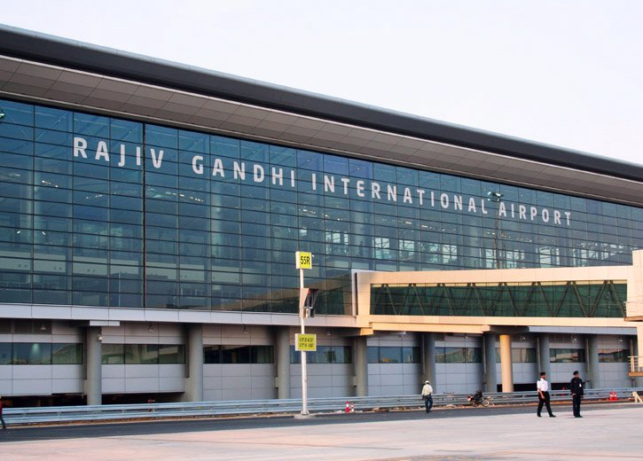

Trunk Roads are purple from far, red when zoomed in.
Primary city roads are black from far, green when zoomed in.
Indira Gandhi International Airport (IATA: DEL, ICAO: VIDP) serves as the primary civilian aviation hub for the National Capital Region of Delhi, India. The airport, spread over an area of 5,106 acres (2,066 ha),is situated in Palam, 15 km (9.3 mi) south-west of the New Delhi railway station and 16 km (9.9 mi) from New Delhi city centre. Named after Indira Gandhi, a former Prime Minister of India, it is the busiest airport in India in terms of passenger traffic since 2009. It is also the busiest airport in the country in terms of cargo traffic overtaking Mumbai during late 2015. In calendar year 2016, it was the 21st busiest airport in the world and 10th busiest airport in Asia by passenger traffic handling over 55 million passengers.The airport handled over 57.7 million passengers in fiscal year 2016-17. It is the world's busiest airport for Airbus A320 aircraft. With the commencement of operations at Terminal 3 in 2010, it became India's and South Asia's largest aviation hub, with a current capacity of handling more than 40 million passengers.
The airport was rated as the Best airport in the world in the 25–40 million passengers category in 2015, by Airports Council International.
Sardar Vallabhbhai Patel International Airport (SVPIA) (IATA: AMD, ICAO: VAAH) is an international airport serving the cities of Ahmedabad and Gandhinagar in Gujarat, India. The airport is located in Hansol, 9 km (5.6 mi) north of central Ahmedabad. It is named after Sardar Vallabhbhai Patel, the 1st Deputy Prime Minister of India.
In fiscal year 2016-17, it handled over 7.4 million passengers and about 180 aircraft movements a day making it the eighth-busiest airport in terms of passenger traffic in India. The airport also serves as a focus city for GoAir and Jet Airways. In 2015, the government started the procedure for the privatization of the airport. The airport is set to be replaced by Dholera International Airport due to expansion constraints.
Chhatrapati Shivaji Maharaj International Airport (IATA: BOM, ICAO: VABB), formerly known as Sahar International Airport, is the primary international airport serving the Mumbai Metropolitan Area, India. It is the second busiest airport in the country in terms of total and international passenger traffic after Delhi, and was the 14th busiest airport in Asia and 29th busiest airport in the world by passenger traffic in calendar year 2016 handling over 44.68 million passengers.[6] Its passenger traffic crossed 45 million in fiscal year 2016-17. The airport is the second busiest in the country in terms of cargo traffic also. In March 2017, the airport overtook London's Gatwick Airport as the world's busiest airport with only one operational runway at a time.[7] The airport has three operating terminals spread over an operational area of 750 hectares (1,850 acres)[8] and handles about 850 aircraft movements per day. It handled a record 51 movements in one hour on 16 September 2014.[9] It won the 2015 ASQ Best Airport Award in the 25-40 million passengers per annum category by Airports Council International. It has also won the "Best Airport in India and Central Asia" award at the Skytrax 2016 World Airport Awards.[11] It is one of the three airports in India to have implemented Airport Collaborative Decision Making (A-CDM) to ensure timely takeoffs and landings.
Chennai International Airport (IATA: MAA, ICAO: VOMM) is an international airport serving the city of Chennai (Madras), Tamil Nadu, India and its metropolitan area. It is located at Meenambakkam, 21 km (13 mi) from Chennai. It is the fourth busiest airport in India in terms of total passenger traffic after airports at Delhi, Mumbai and Bengaluru. It is the 49th busiest airport in Asia for CY 2016. In the fiscal year 2016-17, the airport handled over 18.3 million passengers and 400 aircraft movements a day.
The domestic and the international terminals are named after former chief ministers of Tamil Nadu K. Kamaraj and C. N. Annadurai respectively. It was the first airport in India to have international and domestic terminals located adjacent to each other. This airport serves as the regional headquarters of the Airports Authority of India for South India comprising the states of Tamil Nadu, Andhra Pradesh, Telangana, Karnataka, and Kerala and the union territories of Puducherry and Lakshadweep.
Kempegowda International Airport (IATA: BLR, ICAO: VOBL) is an international airport serving Bangalore, the capital of the Indian state of Karnataka. Spread over 4,000 acres (1,600 ha), it is located about 40 kilometres (25 mi) north of the city near the village of Devanahalli. It is owned and operated by Bangalore International Airport Limited (BIAL), a public–private consortium. The airport opened in May 2008 as an alternative to increased congestion at HAL Airport, the original primary commercial airport serving the city. It is named after Kempe Gowda I, the founder of Bangalore. Kempegowda International Airport became Karnataka's first fully solar powered airport developed by CleanMax Solar.
As of 2016, Kempegowda Airport is the third-busiest airport by passenger traffic in the country, behind the airports in Delhi, Mumbai and is the 35th-busiest airport in Asia. It handled over 22.2 million passengers in 2016 with little less than 500 aircraft movements a day. The airport also handled about 314,060 tonnes (346,190 short tons) of cargo. By 2020, it is expected to handle at least 40 million passengers per year, with 45 international airlines and more than 1000 aircraft movements per day.
Goa International Airport (IATA: GOI, ICAO: VOGO), also known as the Dabolim airport, is the sole airport in the state of Goa, located in the city of Dabolim in Goa, India. It operates as a civil enclave in a military airbase named INS Hansa. It is 4 km from the nearest city Vasco da Gama, 23 km from Margao, and about 30 km from the state capital Panjim.
Cochin International Airport (IATA: COK, ICAO: VOCI) is an international airport serving the city of Kochi, in the state of Kerala, India. Located at Nedumbassery in Angamaly about 25 km (16 mi) northeast of the city, Cochin International Airport is the first airport in India developed under a public-private partnership (PPP) model and was funded by nearly 10,000 non-resident Indians from 30 countries. It is the busiest and largest airport in the state of Kerala. As of 2017, the Cochin International Airport caters to 63.86% of the total air passenger movement in Kerala.[5] It is also the fourth busiest airport in India in terms of international traffic and seventh busiest overall. In fiscal year 2016-17, the airport handled close to 10 million passengers handling around 234 aircraft movements a day. The airport is a primary base for Air India Express operations which is also headquartered in the city.
Pune Airport (IATA: PNQ, ICAO: VAPO) is located approximately 10 km (6.2 mi) north-east of Pune in the state of Maharashtra, India. The airport is a civil enclave operated by the Airports Authority of India at the eastern side of Lohegaon Air Force Station of the Indian Air Force.
A ₹1 billion airport modernisation plan was launched in August 2008 ahead of the Commonwealth Youth Games hosted by Pune. AAI constructed two new terminal buildings for international passenger departures and arrivals, measuring nearly 12,000 sq. mt. on either side of the 6,500 sq mt old main terminal building which was inadequate for the increase in passengers and flight operations. The new buildings have helped ease peak-time pressure of air passengers. Facilities developed on the air side include a new parallel taxi track and an apron expanded to accommodate eight Airbus A320 or Boeing 737 aircraft. Two aerobridges were also commissioned in 2011. New conveyor belts and passenger facilities including a modern spa were also commissioned.
Netaji Subhas Chandra Bose International Airport (IATA: CCU, ICAO: VECC) is an international airport located in Kolkata, West Bengal, India, serving the Kolkata metropolitan area. It is located approximately 17 km (11 mi) from the city center. The airport was earlier known as Dum Dum Airport before being renamed after Netaji Subhas Chandra Bose, a prominent leader of the Indian independence movement.
Kolkata airport is the largest hub for air traffic in the eastern part of the country and one of two international airports operating in West Bengal, the other being Bagdogra. The airport handled over 15.8 million passengers in fiscal year 2016-17 making it the fifth-busiest airport in India in terms of passenger traffic after Delhi, Mumbai, Bangalore and Chennai.
In 2014 and 2015, Kolkata Airport won the title of Best Improved Airport in the Asia-Pacific region awarded by the Airport Council International.
Rajiv Gandhi International Airport (IATA: HYD, ICAO: VOHS) is an international airport that serves Hyderabad, the capital and largest city of the Indian state of Telangana. It is located in Shamshabad, about 24 kilometres (15 mi) south of Hyderabad. The airport is operated by GMR Hyderabad International Airport Ltd, a public–private venture. It was opened in March 2008 to replace Begumpet Airport as the primary commercial airport for Hyderabad. It is named after Rajiv Gandhi, former Prime Minister of India.
As of 2017, RGIA is the sixth busiest airport by passenger traffic in India. The airport served 17.1 million passengers in 2017.
